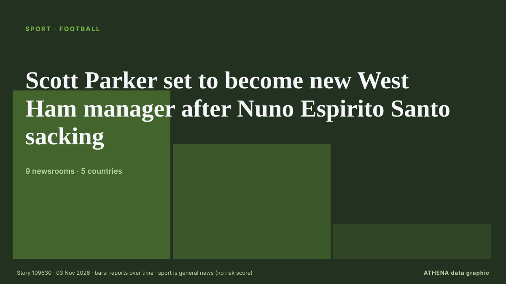

Sport
GesponsertPräsentiert von  Cybernetics and Artificial Intelligence Lab Welcome to the Cybernetics and Artificial Intelligence Laboratory, established at the Department of Business Administration of the National and Kapodistrian University of Athens. The lab is headed by Professor Dimitrios Thomakos. The lab aims to do research that can be published in top venues. Our research uses tools and methods of Artificial Intelligence, and lies in the following areas: - Forecasting - Decision making - Cyber security - Finance We are always looking forward to collaborating with exceptional students!
Cybernetics and Artificial Intelligence Lab Welcome to the Cybernetics and Artificial Intelligence Laboratory, established at the Department of Business Administration of the National and Kapodistrian University of Athens. The lab is headed by Professor Dimitrios Thomakos. The lab aims to do research that can be published in top venues. Our research uses tools and methods of Artificial Intelligence, and lies in the following areas: - Forecasting - Decision making - Cyber security - Finance We are always looking forward to collaborating with exceptional students!
Schlagzeilen werden auf Englisch angezeigt, wie veröffentlicht.

FußballScott Parker set to become new West Ham manager after Nuno Espirito Santo sacking
The former West Ham midfielder has experience getting teams promoted from the Championship. von Evening Standard (London)
| 21. Okt. | 9 |
|---|---|
| 22. Okt. | 12 |
| 23. Okt. | 16 |
| 24. Okt. | 9 |
| 25. Okt. | 32 |
| 26. Okt. | 45 |
| 27. Okt. | 64 |
| 28. Okt. | 62 |
| 29. Okt. | 72 |
| 30. Okt. | 102 |
| 31. Okt. | 70 |
| 1. Nov. | 75 |
| 2. Nov. | 75 |
| 3. Nov. | 14 |
Bayern are doing well despite rollercoaster week, Kane says
The German champions are without coach Vincent Kompany and several key players through injury ahead of their Champions League clash with Atletico Madrid. von Free Malaysia Today
Everton beat Newcastle 1-0 to pile pressure on Jaissle
Live updates as Matthias Jaissle's side look to bounce back from their Carabao Cup exit. von Chronicle Live (Newcastle)
Hamilton says Ferrari need 'serious talks' after costly Leclerc attack
(ANSA) - ROME, 02 NOV - Lewis Hamilton has said Ferrari need some clear-the-air discussions following an attack from his team mate Charles Leclerc that he said cost the team a one-two at Sunday's… von ANSA English
Glenn Maxwell announces retirement from international cricket
Maxwell, popularly known as 'The Big Show', represented Australia in 149 ODIs, 130 T20Is and seven Test matches. von Times of India
South Africa's Verreynne, Prince receive ICC reprimands
South Africa batting coach Ashwell Prince and wicketkeeper Kyle Verreynne have been reprimanded by the International Cricket Council for showing dissent towards the umpires on the third day of the… von Business Recorder
"Not the time for Russia to return" — Finnish politicians condemn sports court ruling
The Court of Arbitration for Sport (CAS) ruled last week that Russian teams can return to ice hockey’s international tournaments. von Yle News (alternative feed)
Gabby Williams leads Valkyries to WNBA championship in second season, beating Dream 68-63 in Game 7
SAN FRANCISCO: Gabby Williams scored her team’s final 11 points of the third quarter and dazzled through the fourth on the way to 30 points, and the Golden State Valkyries captured a championship in… von Arab News
Kane would swap Ballon d'Or for Champions League victory
Bayern Munich striker Harry Kane has beaten Barcelona youngster Lamine Yamal and Real Madrid forward Kylian Mbappé to emerge as the best player of the 2025-2026 season in Spanish newspaper Marca's… von Vanguard
Fifa to share 'key documents' over World Cup sell-off plan
FIFA says "key documents" relating to President Gianni Infantino's failed plan to sell off stakes in the World Cup to private investors will be made available to members of its council - but access… von MyJoyOnline
Russia back in ice hockey world championships after sport court ruling
Court of Arbitration for Sport overturned IIHF decisions that excluded Russia from events in the 2026-27 season. von Al Jazeera English
Aston Villa make legal action decision after Jamie Carragher apology
Pundit had told Villa supporters to "shut the f*** up" von Evening Standard (London)
Senegal prepares to open 2026 Youth Olympic Games in Dakar
Senegal’s three-day general strike entered its second day on Thursday, with unions pressing the government to honour agreements on pay, pensions and working conditions amid a deepening economic… von RFI English
Real Madrid matches still banned in China despite Mbappe apology
"I've seen a lot of responsibility from a club which, at this level, is a club of great class, and as far as we're concerned, that's it, we've done our part, there's nothing more for us to do,"… von Vanguard
Canelo reclaims WBC title as Mexico falls 5-4 to The World in Riyadh boxing showdown
RIYADH: Mexican boxing star Saul “Canelo” Alvarez reclaimed the World Boxing Council Super Middleweight title after defeating France’s Christian Mbilli by unanimous decision in the final bout of… von Arab News
Arsenal win at Anfield for first time in 14 years to move top
Arsenal won at Anfield for the first time in 14 years after Kai Havertz's strike sealed a gritty 1-0 victory - but Liverpool were denied what looked to be a clear penalty. von Sky Sports
Alcaraz beats De Minaur to win Vienna title
Carlos Alcaraz beat Alex de Minaur 6-1 6-4 to win the Vienna Open on Sunday, claiming his fourth title of the season and the 28th of his career, and extending his ATP 500 winning streak to 26 matches. von Cyprus Mail
Chinese state TV fails to air Real Madrid match after Mbappe row
Mbappe, Real and La Liga later all said sorry for his remarks, and China's foreign ministry said it took the player's apology "seriously". von CNA (Channel NewsAsia)
Ten Hag says relegation a real possibility for Man Utd
United sit 17th with seven points from nine games, above relegation-placed Crystal Palace on goal difference, and are winless in nine matches, their longest run without victory since 1984. von Free Malaysia Today
1 killed, 8 injured in shooting outside 'Magic City Classic' in Alabama
One person was killed and eight others were wounded in a mass shooting just outside Legion Field after the annual "Magic City Classic" football game, police in Birmingham, Alabama, said. von ESPN
09:56 Summer Youth Olympic Games flame lit in Senegal Sport
The country is hosting nearly 2,700 young competitors aged 14 to 17 from around the world. von Channels TV
Hamilton laments Ferrari's missed one-two after Leclerc clash in Mexico
Charles Leclerc clocked a best lap time in 1min and 18.128sec to outpace Kimi Antonelli by 0.659sec in the opening free practice of the Mexico City Grand Prix. von Free Malaysia Today
Andoni Iraola: We have to tell players to dive for penalties
Alexander Isak was denied a spot-kick in Liverpool’s loss to Arsenal despite a clear pull by Jurrien Timber. von The Irish News (Belfast)
Penalty drops Oscar Piastri out of F1 Mexico GP points
Oscar Piastri’s tough Mexico Grand Prix weekend has ended in point-less fashion, after the McLaren Formula 1 driver copped a penalty for his collision with Arvid Lindblad. von Motorsport.com
14 players could miss Liverpool vs Arsenal after Andoni Iraola injury update
Liverpool have the chance to close the gap on Arsenal in the Premier League table when they meet at Anfield this afternoon. von Liverpool Echo
Yamashita comes out on top at Maybank Championship
Highlights of round four of the LPGA Maybank Championship in Kuala Lumpur. von Sky Sports
Mercedes driver Kimi Antonelli becomes youngest champion in F1 history at age 20
Twenty-year-old Mercedes driver Kimi Antonelli became the youngest champion in the history of Formula 1 on Sunday with four races still left in the season. von The Canadian Press (via CityNews)
De Minaur upsets Zverev, will face Alcaraz in Vienna final
Alex de Minaur held his nerve to overcome incoming men's No. von Free Malaysia Today
Djokovic faces ATP Finals battle after loss in Basel
Returning to Basel for the first time in 15 years, Novak Djokovic, lost 6-7(4), 7-5, 7-6(5) to German veteran Jan-Lennard Struff in Thursday’s second round, his first defeat in nine meetings. von Free Malaysia Today
Barca hammer Alaves 6-1 to retain Liga top spot
Raphinha and Lamine Yamal struck twice each as Barcelona thrashed Alaves 6-1 on Saturday to reclaim their La Liga lead and get back on track after two damaging defeats. von Vanguard
Yamaha pulls out of Qatar MotoGP over ‘situation in the Middle East’
MotoGP says Yamaha's lack of participation at next weekend's event in Lusail 'carries sporting implications'. von Al Jazeera English
Lawson disqualified from Mexico City GP qualifying, to start last
Stewards slapped both drivers with grid penalties after practice contact left debris scattered across the Mexico City track. von Stuff
Pope Leo tells Villanova and Notre Dame basketball teams he is neutral. Prevost has other ideas
Pope Leo XIV has told the basketball teams from his alma mater, Villanova, and fellow Catholic university Notre Dame that in matters of sport, the pontiff is neutral. von ABC News (International)
Brighton stun Man City, 10-man Man Utd beaten by Chelsea
Brighton inflicted a second straight Premier League defeat on Manchester City with a 1-0 win to close within two points of the leaders on Saturday, while Manchester United slumped to another damaging… von The Namibian